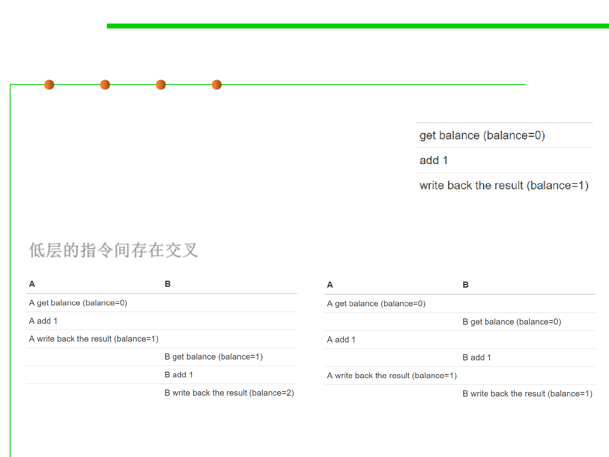

Interleaving 交叉/交错
10.1 Concurrency and Thread-Safety
▪ Suppose two cash machines, A and B, are both
working on a deposit at the same time. Here’s
how the deposit() step typically breaks down into
low-level processor instructions:
▪ When A and B are running concurrently, these
low-level instructions interleave with each other...
低层的指令间存在交叉